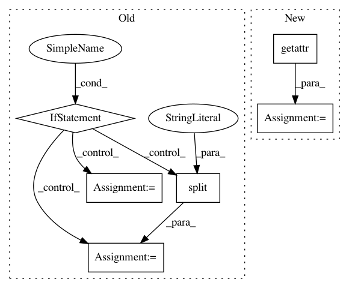

abbfdc5b04ec1824e42cebb472626d234ff7bd36,scripts/speaker_embedding.py,,test,#Any#Any#Any#Any#Any#,383
Before Change
min_duration = None
duration = os.path.basename(train_dir)
if "-" in duration:
min_duration, duration = duration.split("-")
min_duration = float(min_duration)
duration = float(duration)
config_dir = os.path.dirname(os.path.dirname(os.path.dirname(train_dir)))
config_yml = config_dir + "/config.yml"
After Change
preprocessor_params = preprocessor.get("params", {})
preprocessors = __import__("pyannote.audio.preprocessors",
fromlist=[preprocessor_name])
Preprocessor = getattr(preprocessors, preprocessor_name)
protocol.preprocessors[key] = Preprocessor(**preprocessor_params)
// -- FEATURE EXTRACTION --
feature_extraction_name = config["feature_extraction"]["name"]
In pattern: SUPERPATTERN
Frequency: 3
Non-data size: 6
Instances
Project Name: pyannote/pyannote-audio
Commit Name: abbfdc5b04ec1824e42cebb472626d234ff7bd36
Time: 2017-01-09
Author: bredin@limsi.fr
File Name: scripts/speaker_embedding.py
Class Name:
Method Name: test
Project Name: pyannote/pyannote-audio
Commit Name: abbfdc5b04ec1824e42cebb472626d234ff7bd36
Time: 2017-01-09
Author: bredin@limsi.fr
File Name: scripts/speaker_embedding.py
Class Name:
Method Name: tune
Project Name: rusty1s/pytorch_geometric
Commit Name: c5ec95b251366e4ab18f8a979c249f3c39ce4628
Time: 2020-06-13
Author: matthias.fey@tu-dortmund.de
File Name: torch_geometric/nn/conv/utils/inspector.py
Class Name: Inspector
Method Name: types